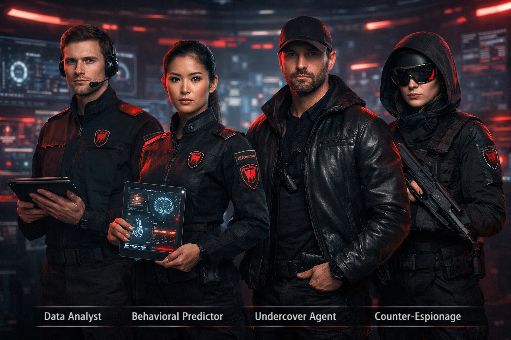

Defense & enforcement · Intelligence & surveillance
VAULTRIA Intelligence Bureau (VIB)
The Bureau is not a job list — it is a power structure: eyes, brain, and shadow. It reports through Custodian of Intelligence, ties to Vaultryn / Aegis, and routes outcomes to Enforcers and other arms per threat tier. Economics: CV / TV.
Division roles overview

Motto
We see before it happens.
Top hierarchy (command)
Prime Custodian
Ultimate authority over intelligence — access bands, operation overrides, and black-level tasking as Core Doctrine defines.
Head of the Intelligence Bureau — reports to the Prime Custodian; owns surveillance architecture, predictive systems, and covert posture (within law and oversight).
Shadow Director (black ops head)
Runs classified operations with minimal public footprint — deep cover, internal threats, and sanctioned extreme measures only where national doctrine allows (including terminal action against existential threats if chartered).
Core intelligence divisions
A. Data Analysis Division
Raw data becomes truth.
Roles: data analysts, signal analysts, pattern engineers.
Process citizen-linked data, surveillance feeds, and comms metadata where lawful; detect anomalies; feed national AI models.
B. Behavioral Prediction Division
We act before action happens.
Roles: behavioral predictors, psychological profilers, risk analysts.
Crime likelihood, unrest signals, individual threat scores — outputs inform monitoring and enforcement routing (with false-positive safeguards on paper).
C. Undercover Operations Division
Invisible inside the system.
Roles: undercover agents, deep-cover operatives, identity specialists.
Infiltration of criminal networks, rebellion-adjacent cells, and external threats; long-con social blending.
D. Counter-Espionage Division
No one spies on VAULTRIA.
Roles: counter-espionage agents, internal-affairs operatives, loyalty inspectors.
Spies, traitors, leaks — scope can include officials, military, and police. Nobody sits above this watch except the Prime Custodian.
E. Cyber Intelligence Division
Control the digital world.
Roles: cyber analysts, authorized intrusion specialists, network monitors.
Track online activity and digital threats; defensive hardening; authorized offensive cyber under rules of engagement (overlaps Cyber Command where doctrine merges lanes).
F. Surveillance Division
Everything is observed.
Roles: drone operators, camera-network controllers, signal trackers.
Streets, cities, borders — real-time feeds into fusion cells and Aegis.
Special units (classified)
Black Division (ghost unit)
Off-record capability — silent removals, extreme threats. Reports only to Shadow Director and the Prime Custodian per charter.
Internal Threat Unit
Watches government, military, and intelligence itself — coup and capture resistance at the institutional level.
Rank structure (within VIB)
Top: Custodian of Intelligence · Shadow Director
Senior: Chief Analyst · Division Director · Lead Operative
Mid: Senior Agent · Analyst · Field Operative
Entry: Junior Analyst · Trainee Operative
How intelligence flows
What makes this system powerful
- Predictive, not only reactive — scoring and fusion before shots are fired.
- Watches citizens, leaders, and itself (internal threat lane).
- Designed so surprise is rare — at the cost of pervasive visibility.
Realistic edge
False positives ruin lives. Over-control breeds fear. If the Bureau ever turns, it is one of the few organs that can challenge the center — which is why Internal Threat Unit and doctrine exist in the same document.
In one line
VIB is the eyes (surveillance), the brain (analysis and prediction), and the shadow (covert ops).
Service benefits
Elite covenant — intelligence
You do not just live in the system — you understand it.
1. Information power
National picture, early warning, restricted files — in VAULTRIA, information is leverage (lawfully, by clearance).
2. Economy
- High Core Vyr (CV) bands; Trust Vyr (TV) accrual
- Priority housing, services, approvals where chartered
3. Zones
Yellow zones routinely; red zones by clearance; select black nodes for top agents — see Vault Zones.
4. V.A.I.L. & identity
V.A.I.L. — Vault Access & Infrastructure Lane: higher baseline clearance mobility (aligned with Autonomous Defense service privileges). Undercover cadre may use masked identity layers under strict rules.
5. Protection & immunity
National-security cover for certain acts; faster legal channels; priority response if targeted.
6. Training
Psychology, pattern work, strategic thought, emotional control — hard to manipulate, hard to deceive.
7. Influence
Flags, investigation steering, recommendations to command — senior agents shape outcomes without holding a public title.
8. Social reality
Rarely celebrated in propaganda; quietly respected and feared.
9. Black access (top only)
Classified missions, hidden layers, direct lines to apex leadership when cleared.
10. Advancement
Fast-track to inner-circle trust tiers and senior state roles where quotas exist.
Costs
- No full privacy — even off shift, risk profiles apply
- Normal civilian life is limited
- Constant cognitive load; trust outside the cell is scarce
- You are watched while you watch
Summary: Citizens live in VAULTRIA; police enforce; military defends — intelligence shapes what VAULTRIA believes is coming next.
Next design layers
- Uniforms by division (analyst vs undercover vs cyber)
- Rank badge system
- Live threat-map UI canon
- Recruitment psych battery and academy pipeline
- Path to Shadow Director (succession rules)